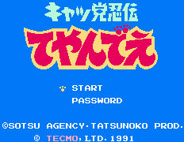

Kyatto Ninden Teyandee - Nintendo Games

Controls
- A button: Jump
- B button: Attack
- Start: Pause
- Select: [not used]
Pressing Start will pause the game and let you choose which of the three characters you want to play
as. Special weapons can be picked up along the way; to use them, press Up + A. Tapping the directional pad
twice and then holding it will make you run.
Anime Video Game Resource Center © 1998 by Luis A. Cruz